Electrostatic cleaning
High-voltage collection of suspended particles, sludge and varnish to 1 micron and below — with no effect on the oil's additives.
ELC
Explore
Navigate
HomeCompanyProductsServicesIndustriesContactProduct families
Electrostatic Liquid CleanersLow Vacuum DehydrationIntegrated Clean & DehydrateHydraulic Oil FiltrationOil Filtration Plants2-Stage & 3-Stage FiltrationGearbox Oil FiltrationCoolant FiltrationCondition MonitoringOil Testing KitsConsumables & SteelsReach us
+91 20 4603 3076 info@ferrocare.comS. No. 32/3/8, Yewlewadi Road,
Kondhwa Budruk, Pune – 411048
Maharashtra, India
Ferrocare builds the machines that take contamination out of hydraulic, gear, turbine and lube oil — electrostatic cleaners that reach below one micron, vacuum dehydrators that pull water down to 10 ppm, and the instruments that prove it worked. Manufacturing in Pune since 1980.
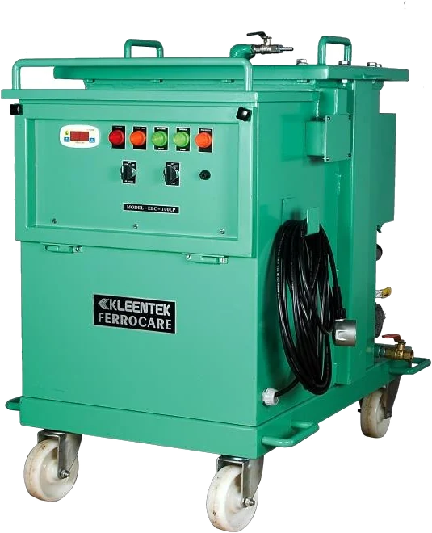
Four decades of supply to steel mills, power stations, automotive lines, plastics plants and defence establishments.
Client names are drawn from Ferrocare's own published client listings, historical and current.
Contamination is not one problem. Solid particles, water, varnish and sludge each need a different machine — and a different measurement. Ferrocare builds across all of them, which means the recommendation is sized to your oil rather than to a product list.
High-voltage collection of suspended particles, sludge and varnish to 1 micron and below — with no effect on the oil's additives.
Free, emulsified and dissolved water removed under low vacuum, returning oil to 10–20 ppm without thermal stress.
Magnetic pre-straining and multi-stage cartridge trains that hold ISO cleanliness codes on live hydraulic systems.
High-flow filtration for grinding and honing cells, keeping abrasive fines out of the cutting zone.
Online particle counters, portable cleanliness monitors and moisture sensors that put a number on oil condition.
Field test kits and on-site cleaning and dehydration service, with cleanliness readings before and after.
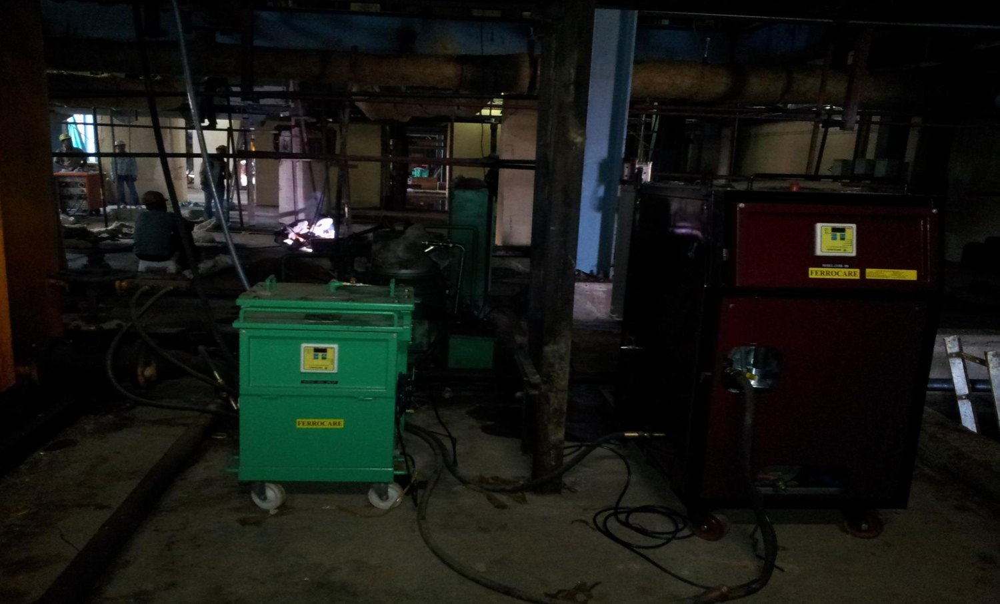
Steel mills, power stations, automotive lines, plastics plants and defence establishments. The machines are installed on the shop floor and left to work — cleaning oil continuously while the plant keeps producing.
A pleated collector sits between two charged electrode sets. Every suspended particle — metal, paper, wood, plastic, rubber — migrates to an electrode and is held there. Sludge and varnish, which mechanical filters do not register as particles at all, are captured too.
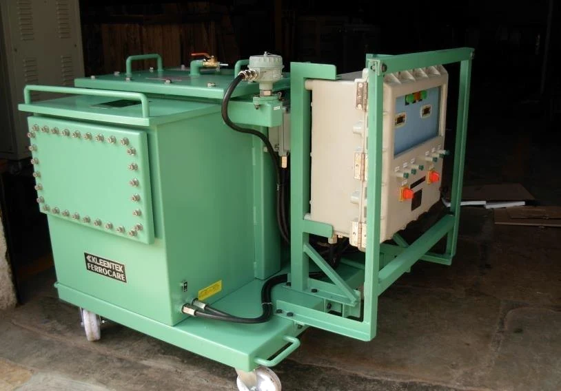
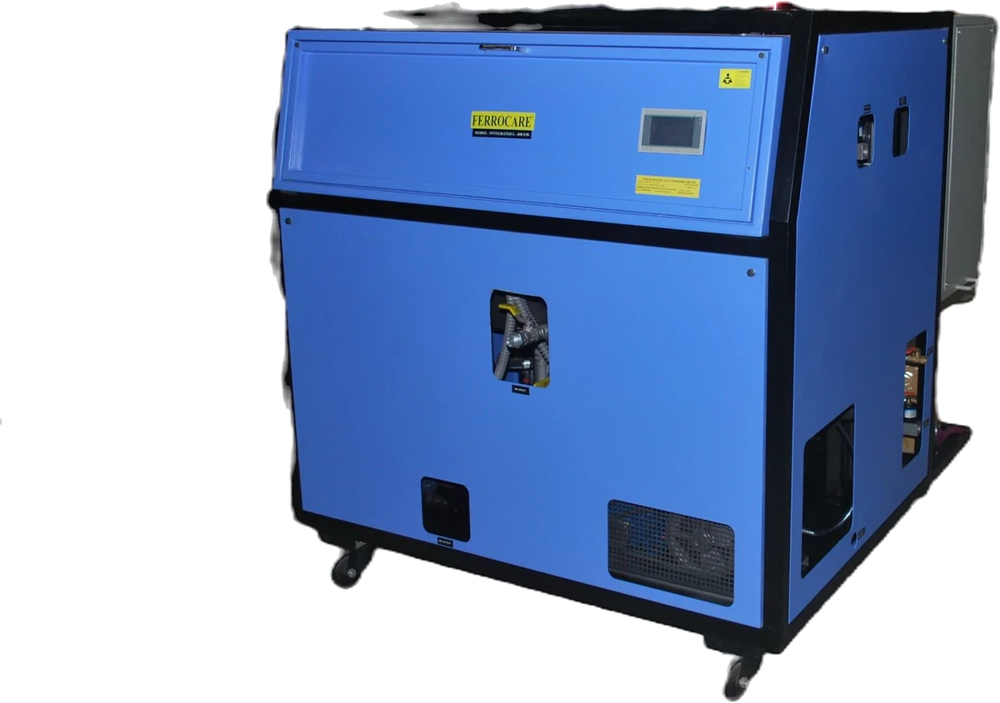
At reduced pressure, water boils off at a temperature the oil tolerates easily. Free water, emulsified moisture and dissolved moisture all come out — along with entrained gas, on the degassification models. Several thousand litres of turbine or hydraulic oil stay in service instead of being replaced.
11 families covering oil purification, mechanical filtration, process fluids, condition monitoring and consumables. Each family page carries the model designations and published specifications.
Sub-micron cleaning without touching the oil's chemistry
100 % free water and emulsified moisture, removed
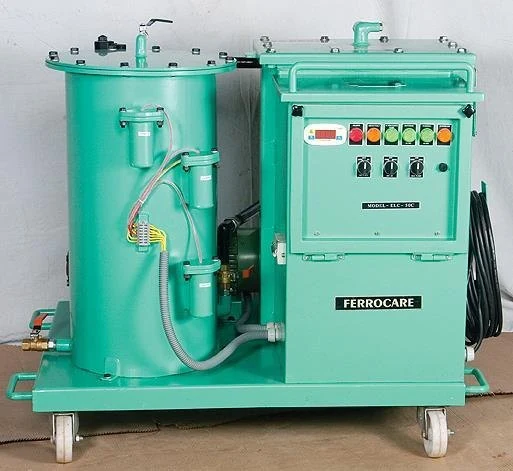
Electrostatic cleaning and vacuum dehydration in one machine
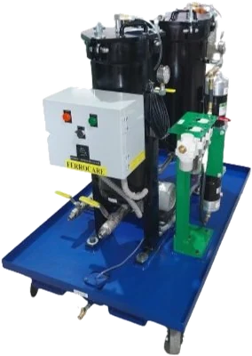
Portable, trolley and inline solid removal
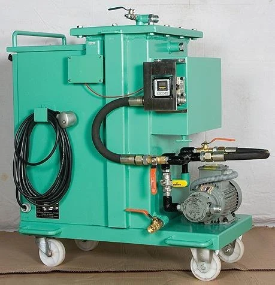
Skid-mounted systems for the heavy end of the plant
Each element does one job, so all of them last longer
Electrostatic collection removes sludge and varnish that mechanical filters cannot see, and does it without disturbing the additive package. The oil goes back into service unchanged — just cleaner. The technology was licensed from Kleentek of Japan and refined over four decades.
Under vacuum, water boils below 53 °C — well inside what the oil tolerates. That means no burn-off, no oxidation and no additive depletion, so turbine and hydraulic oil that would be written off returns to 10–20 ppm water instead.
Flow rate, viscosity, water load, fluid chemistry and footprint are engineered per application. Machines ship skid- or trolley-mounted, in MS or SS, with EPT Canada acid-control chemistry where phosphate-ester fluids demand it.
Ferrocare supplies the instruments as well as the machines — including digital imaging that classifies wear-particle shape. Cleanliness codes and moisture readings are what justify a filtration programme, and prove it worked.
These are Ferrocare's own service photographs. Sludge and varnish coat valve spools until they stick. Fine particles bridge bearing clearances and fatigue the surface. None of it is visible until the machine stops.
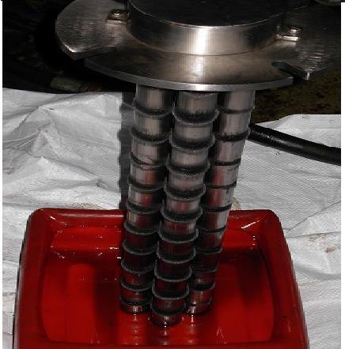
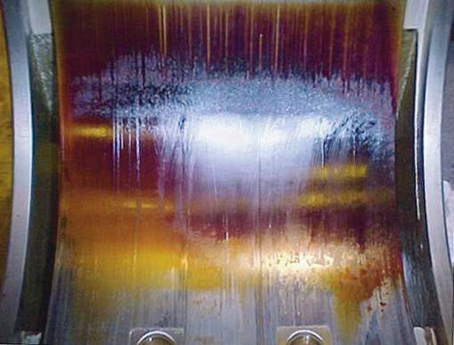
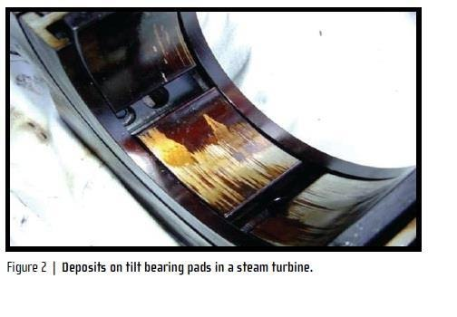
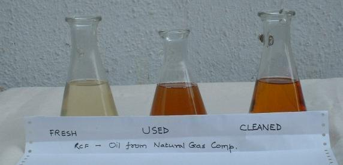
Ferrocare units are working installations, not laboratory equipment. Trolley-mounted machines move between reservoirs; skid units stay plumbed into the system they serve.
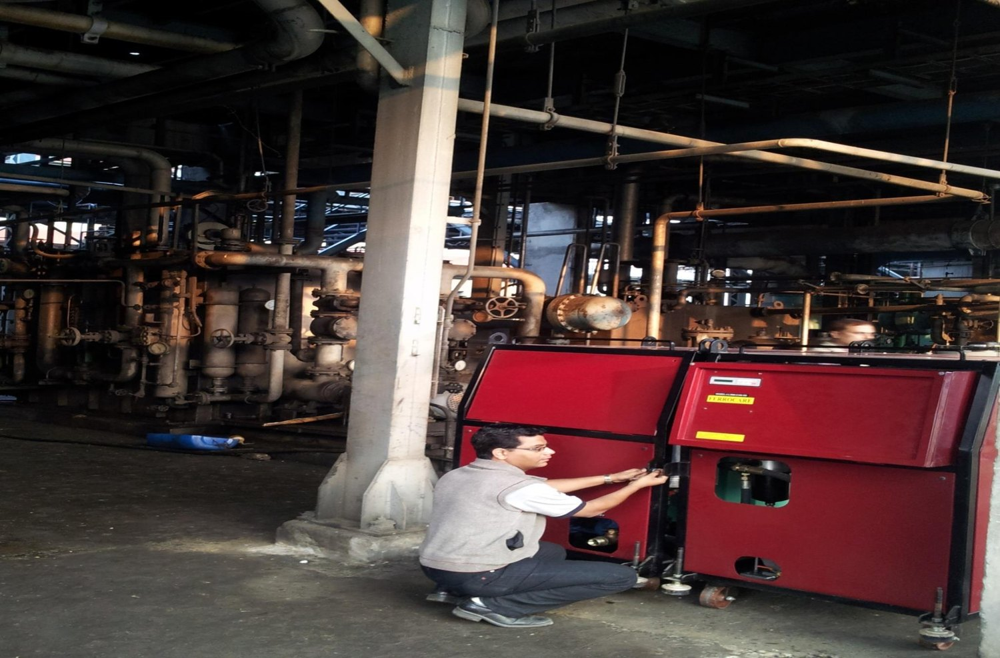
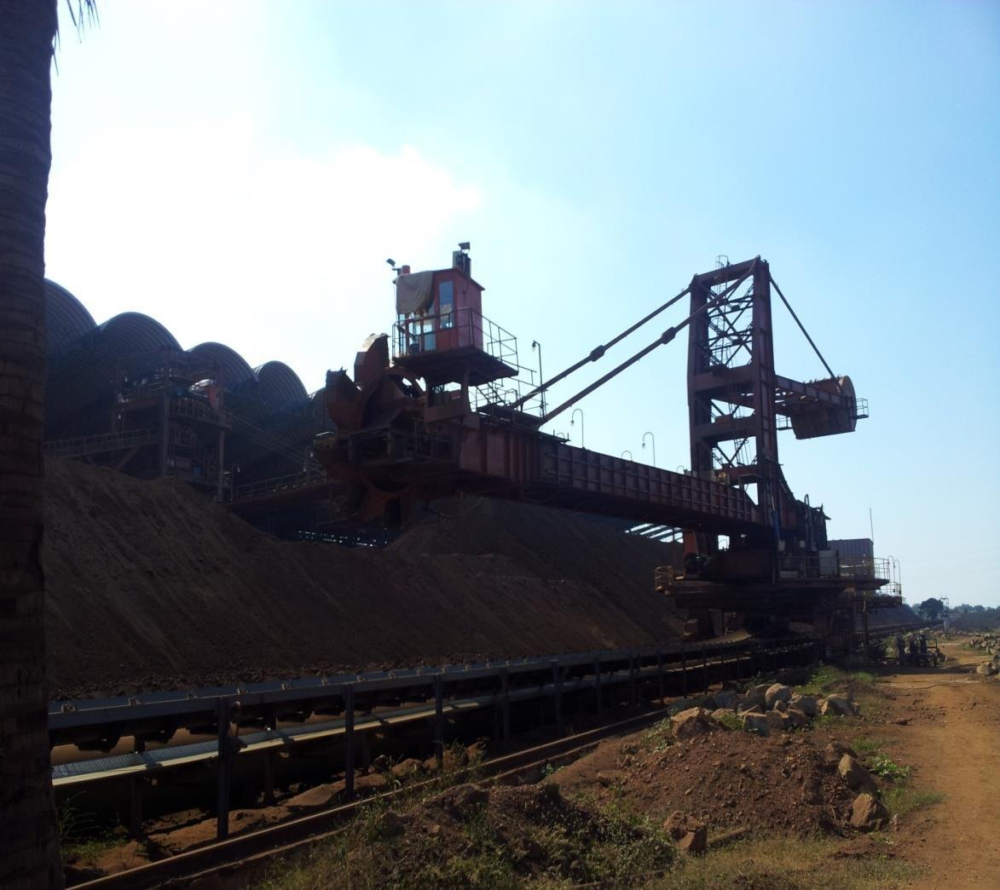
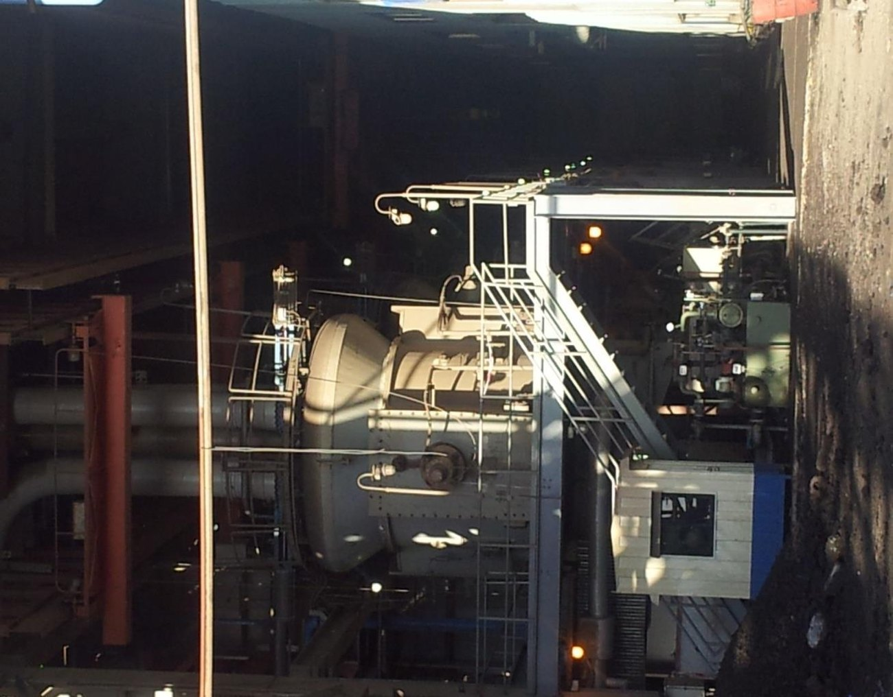
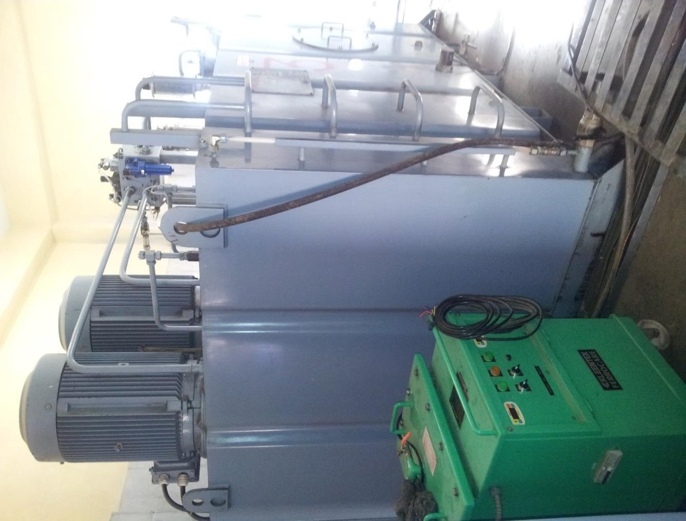
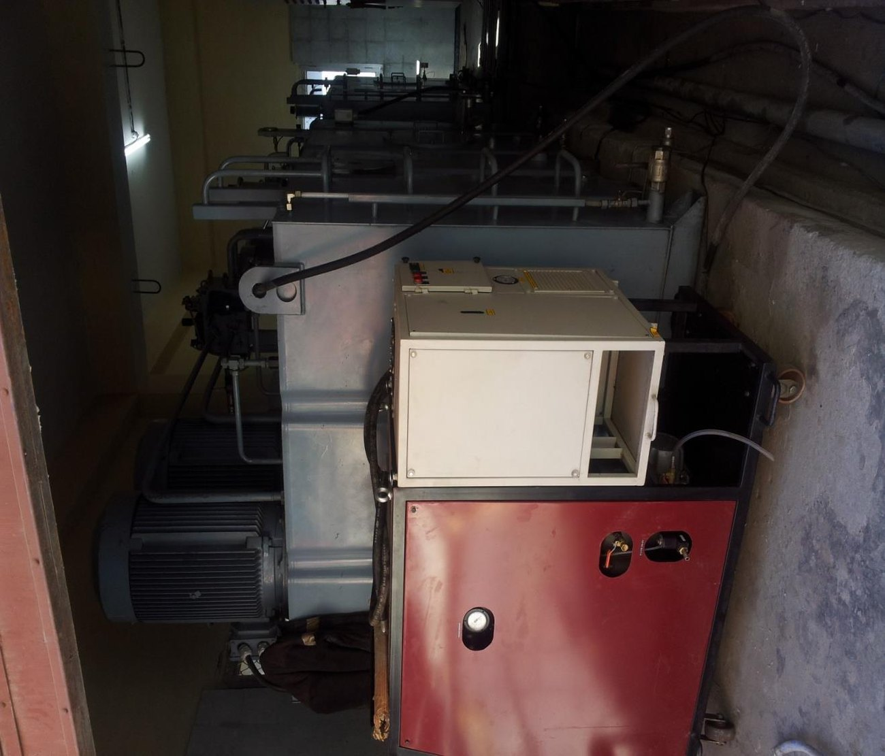
Steel mills, power stations, automotive lines, machine shops, cement plants and ports. Different fluids, different contamination, same requirement: the oil has to be in specification.
Mill hydraulics, gearbox lube circuits and fire-resistant fluids see heavy water ingress and metallic wear. Dehydration, acid control and electrostatic cleaning keep control systems responsive under continuous duty.
Turbine lube oil and EH control oil degrade slowly and expensively. Degassification and dehydration restore specification rather than replacing several thousand litres of oil.
Injection moulding, press and machining hydraulics run servo valves with micron-level clearances. Electrostatic cleaning is what keeps those valves from sticking and drifting.
Surface finish is decided by what is circulating in the coolant. High-flow filtration and magnetic separation keep abrasive and carbide fines out of the cutting zone.
Large gearboxes, kiln drives and crusher hydraulics operate in dust-heavy environments where contamination ingress never stops.
Remote duty points and expensive downtime make condition monitoring essential. Portable instruments let one engineer survey an entire fleet or terminal.
Servo-hydraulic moulding machines are unforgiving about oil cleanliness. Varnish deposits on valve spools cause drift, scrap and unplanned stoppages.
Test rigs, ground support equipment and ordnance plant hydraulics demand documented cleanliness. Ferrocare equipment and test kits are used across Indian defence establishments.
Every Ferrocare machine starts with the fluid and the duty point. Nothing is quoted from a table alone.
Oil type, viscosity grade, reservoir volume, flow rate, operating temperature and the fluid's chemistry — mineral, synthetic, water-glycol or FRF.
Water ingress, metallic wear, sludge and varnish build-up, or a cleanliness code that has drifted out of specification.
Electrostatic, dehydration, mechanical or a combination. Flow rate, heater load, vacuum level, filtration staging and mounting format.
Particle counts and moisture readings before and after. Cleanliness codes are how a filtration programme is justified.
Send us the fluid type, reservoir volume, flow rate and the contamination you are seeing. Our engineers will size a machine — or a service visit — against that duty point.